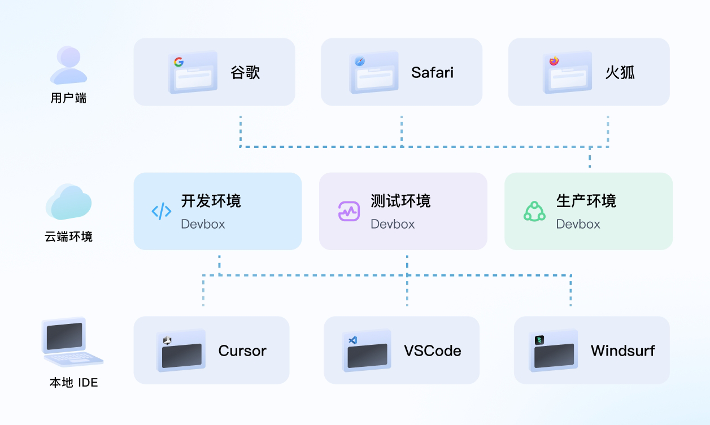
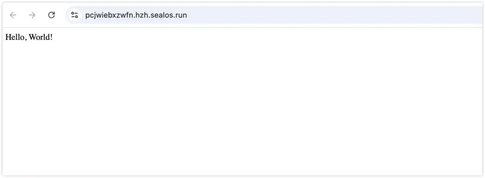
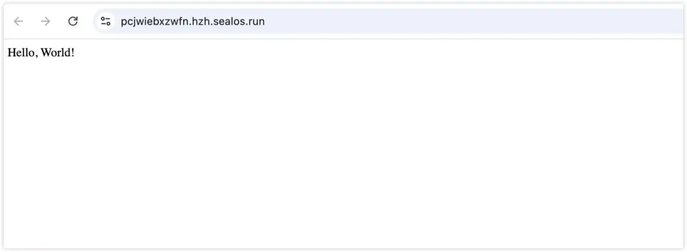
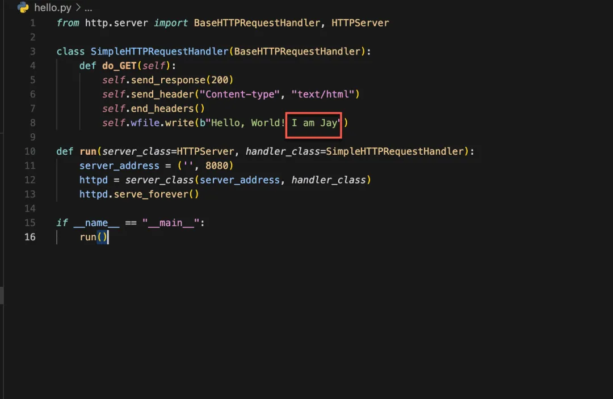

相关阅读
- 不会前端也能写官网？没问题，Devbox+Cursor 带你起飞
- 3分钟部署上线小产品？Cursor 和 Devbox 让开发从未如此简单！
- 我一行代码也没写，Cursor 和 Devbox 给我写了个高仿苹果官网！
- 使用Cursor和Devbox告别Nginx环境配置噩梦，让Nginx开发效率提升300%
- 别再浪费时间配置环境了！这个比 Laf 还牛的云开发框架，让我3分钟搭建完整应用
- Devbox 开发 C/C++，在 Cursor 终端里玩俄罗斯方块
- 一篇文章告诉你 Devbox 是如何从架构上干掉 CI/CD 的，连渣都不剩
- 我真的一行代码都没写啊！都是Cursor和Devbox做的！它甚至写完了还直接帮我部署了
- 35岁程序员使用Cursor和Devbox手撕基于Rust的WASM智能合约
- 还在使用昂贵的虚拟机？来试试 Devbox，便宜 6 倍！
- Sealos Devbox 发布，珍爱生命，远离 CI/CD
3分钟部署上线官网，我用 Windsurf 和 Devbox一键搞定开发环境

Sealos
2024年11月01日Windsurf 是 Codeium 最近新放的一个大招，它是一款”既智能又懂事 “的 IDE，采用了与 Cursor 相同的方式，直接 fork 了 VSCode，以便将 AI 能力深度集成到 IDE 中。
下面我们来使用 Sealos Devbox 和 Windsurf 3分钟开发和部署一个网站，实现本地开发环境、测试环境与生产环境的无缝衔接。

Devbox 一键配置所有开发环境，省略了配置域名解析、申请 SSL 证书，配置网关等与开发无关的繁琐操作，直接写代码就行。
创建开发环境
一）创建环境
首先进入 Sealos 桌面：https://hzh.sealos.run
然后打开 Devbox 应用，创建一个新项目，这里我们选择使用 Next.js 作为运行环境。
二）连接Windsurf
接着会提示安装 Devbox 插件，安装后即可自动连接开发环境。

连接成功后，打开 Windsurf，选择连接到远程 SSH 环境。
三）修改基础配置
连接成功后，我们来修改一下项目的根目录，点击左边的 “Open Folder” 按钮：
然后选择 /home/devbox/project 目录作为根目录。
完成连接
开发网站
Cascade 提供了聊天和编辑两种模式，聊天模式和 Cursor 的 Chat 面板类似，而编辑模式则和 Cursor 的 Composer 面板类似，可以生成和修改代码。
下面开始念咒施法，来，给我写一个 AI 虚拟女友：
创建完各种文件之后，还贴心地问我要不要安装依赖，命令都给我写好了9
只需要点击右下角的 “Accept all” 接受所有修改就行了。
发布线上
这次的分享主题是「代码快速上线」，那这个 demo 在互联网上怎么查看效果呢？
我们回到 Devbox 项目中，点击外网地址，就可以在公网看到效果啦。
 

当然，这只是用初始化的代码演示的效果。接下来，我们来展示下修改部分代码后，怎么更新线上环境。
更新代码
这里以修改网页内容为例，加上 I am Jay 的字符，记得保存代码。
在控制台（Terminal）按 Ctrl + C 关闭应用，再输入命令 python3 hello.py 重新启动。

无论本地还是线上都会立刻更新成功，不需要做任何多余的动作，线上代码就生效了。
但是，我们并没有完成线上发布哦，毕竟电脑不可能一直运行程序，后续步骤会介绍。

总结
在传统开发中，连接开发环境的数据库就像是穿越千山万水去约会 - 要配 IP、调防火墙、改配置。但在 Sealos 中，Cursor 和数据库就像住在隔壁的青梅竹马，想约就约，连个电话都不用打。这种开发体验，不就是我们每个开发者心中的 "理想型" 吗？
有了这对神仙搭档，你就可以把更多精力放在实现产品创意上，而不是被繁琐的环境配置耗尽耐心。
关于 Sealos
Sealos 是一款以 Kubernetes 为内核的云操作系统发行版。它以云原生的方式，抛弃了传统的云计算架构，转向以 Kubernetes 为云内核的新架构，使企业能够像使用个人电脑一样简单地使用云。